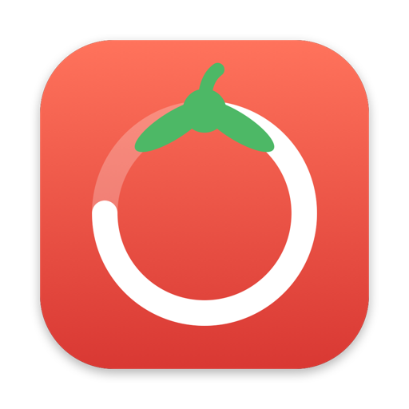
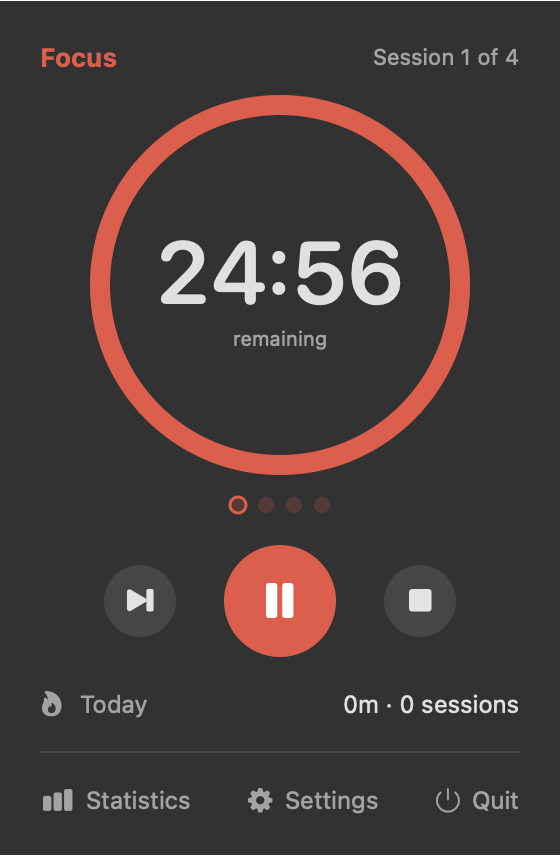
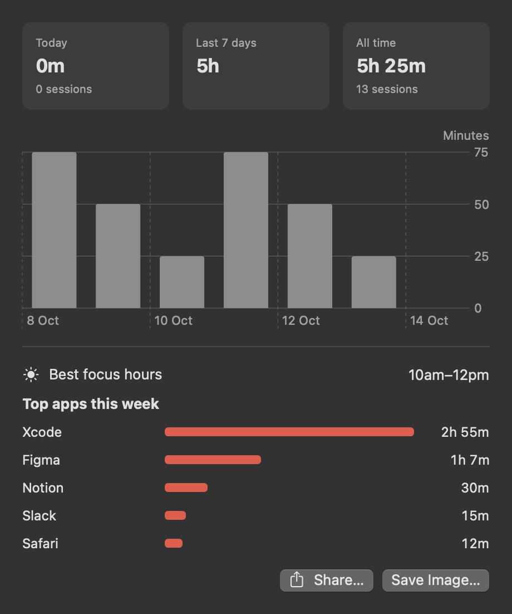
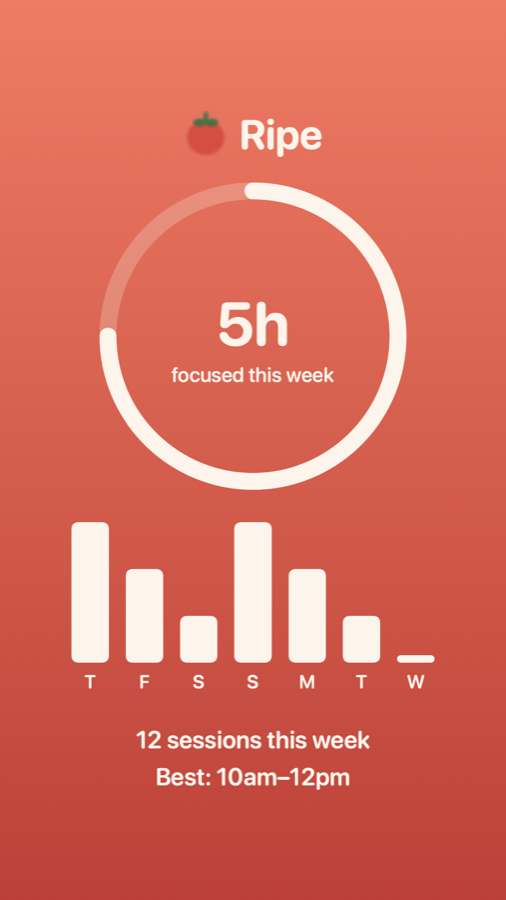

One click from the menu bar
Click the tomato for the timer. Space starts and pauses; ⌥⌘P works from any app. No Dock icon, no windows in your way.

A Pomodoro timer that lives in your Mac's menu bar. The tomato ripens as you focus.
Download for MacGreen when you start, red when it's time for a break.

Click the tomato for the timer. Space starts and pauses; ⌥⌘P works from any app. No Dock icon, no windows in your way.
Everything a Pomodoro timer needs, and a few things it usually doesn't have.
Set the lengths and how many rounds. Sounds and notifications when a phase ends.
Stops counting when you step away from the keyboard or your Mac sleeps, and resumes when you're back.
Your best focus hours and which apps you focused in, this week.
A ready-made Instagram Story image of your week, with AirDrop to your phone.
No account, no server. Everything stays on your Mac, and app tracking can be turned off.
Starts with your Mac so the tomato is always there.
Statistics shows today and the last 7 days, your best two-hour window for focus, and the apps you spent focus time in.


One click makes a 1080×1920 Story image of your week. App names never appear on it.
Ripe is free and isn't distributed through the App Store, so macOS asks you to approve it the first time.
Prefer Terminal? xattr -dr com.apple.quarantine /Applications/Ripe.app skips step 3. Or build it from source.